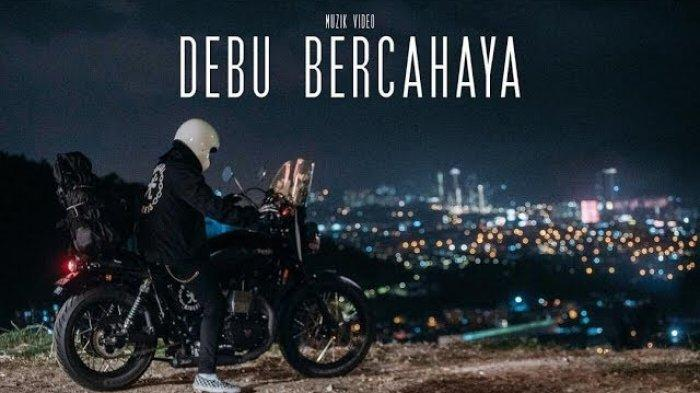

I have been very interested in music since I was a child. So, singing is my hobby.
Singing can express my emotions and feelings in a profound way. My idol in the field of singing is Noh Salleh.
He is very creative in making songs and performances. I really idolize him and hope to be able to succeed like him one day.

This is one of the song by Noh Salleh that I really
likes.